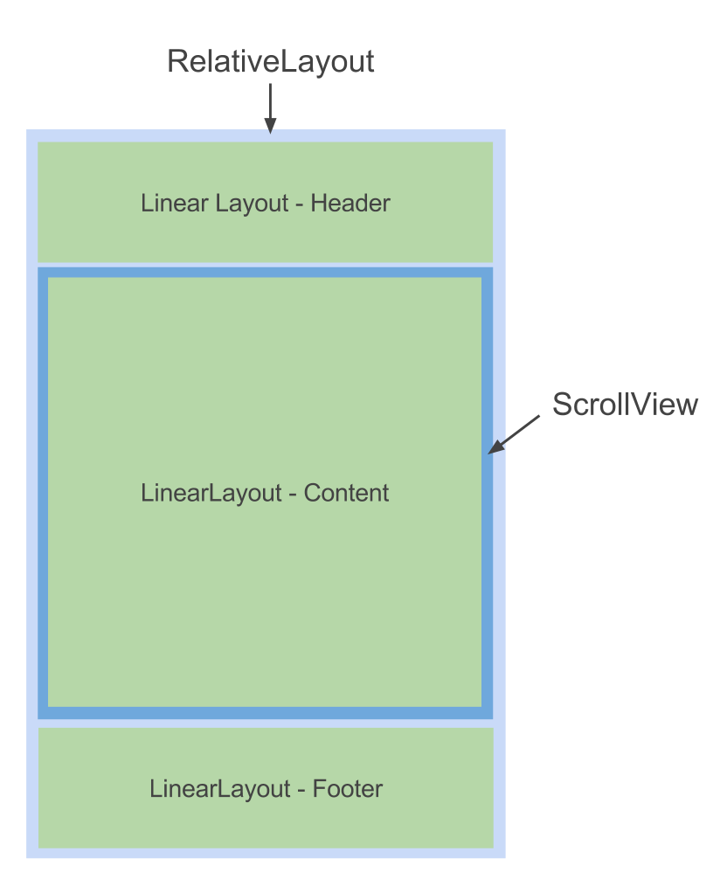
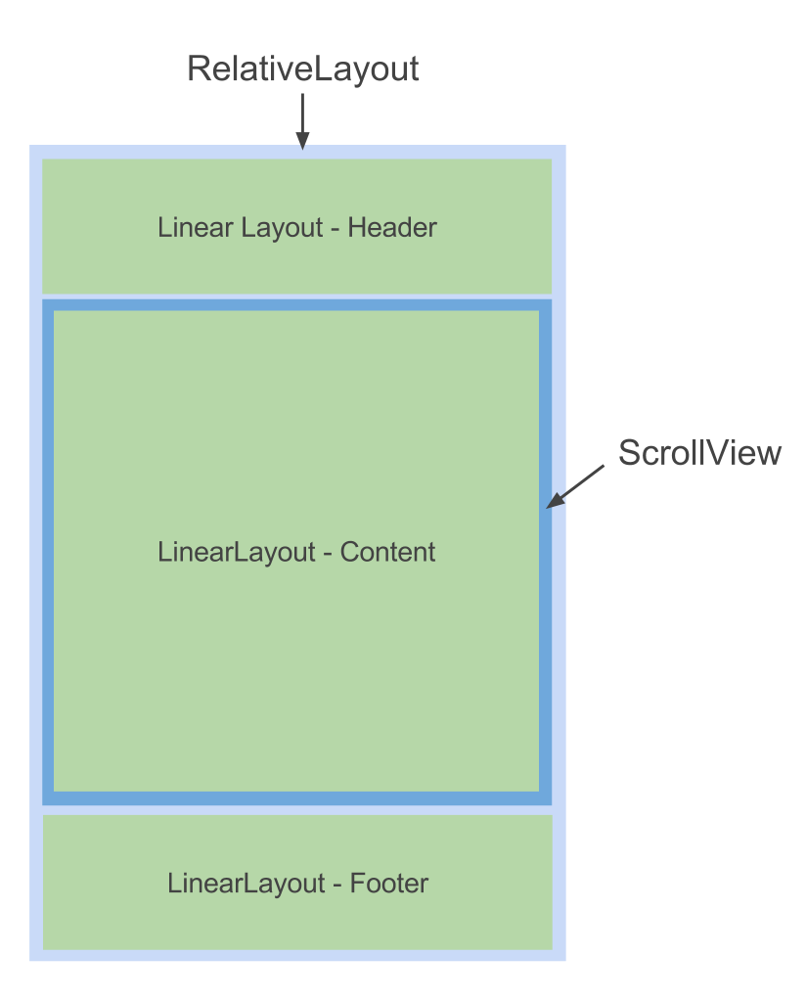

Exercise 1 - Project creation
Create an Android project in Eclipse and run it using the emulator.
Exercise 2 - Layouts
The goal of this exercise is to make you practice with layouts in order to get a final view similar to the one captured: a form with two fields and controls at the bottom of the screen. This screen represents the connexion form of our future app.
 

Indications:
- TextView displays a text
- EditText displays an editable field
- ScrollView is a container for scrollable content
- Button displays a button
A good way to start is by placing the layouts with various background colors to ensure everything is correctly set and reacts correctly to an orientation change.
To change the background color of an element:
android:background="#FFFF0000"
In red transparency from 00 to FF
In green, the hexadecimal color code (here, representing red)
Bonus

Create a new project and try reproducing the example by just using a RelativeLayout and TextViews. The result should look like this.
Exercise 3 – Activity lifecycle
The goal of this exercise is to understand how an Activity reacts to different events. In order to do this, you will use the logging API provided by Android.
Log.i(TAG, "onCreate!");
A common practice is to declare a TAG constant in the class.
Redefine the following methods and add it an explicit log:
onCreate, onDestroy, onPause, onResume, onSaveInstanceState, onRestoreInstanceState
Observe what happens when:
- The application is starting
- You change the orientation of your phone (Ctrl+F11 with the emulator)
- You close the application

Exercise 4 – Users interactions
The goal of this exercise is to listen and manipulate a view from the Activity. Let's get going with our application for this.
- In the onCreate method of the Activity, gather the elements you are about to use with findViewById:
- Add a listener to the buttons' onClick event, which can be either the Activity, an anonymous class or an external one.
- Implement the button "Empty" which suppress the content of the textfields.
- Implement the button "Send" which displays a Toast.
Toast.makeText(this, "Toast !", Toast.LENGTH_SHORT).show();
Bonus 1
Add a validation phase to the form when trying to send which will check that the textfields are not empty.
For the error message, use a TextView with gone as a visibility attribute. The method setVisibility(View.VISIBLE) will then allow you to make this error message visible.
Bonus 2
Change the screen orientation when the error message is visible.
- What happens?
- Why?
- How to correct this?
Exercise 5 – REST webservices
The goal of this exercise is to send a form to a REST webservice.
The first thing to do is to authorize the application to use an internet connection. For this purpose, add the following line in your AndroidManifest.xml:
<uses-permission android:name="android.permission.INTERNET" />
- Create a class
ParlezVousTaskwhich extendsandroid.os.AsyncTask. - In the method
onPreExecute, display a loading wheel. - In the method
onPostExecute, make this wheel invisible. - In the method
doInBackground, retrieve the username and the password. -
Call the webservice inside the method
doInBackground.
The URL you should call is:
http://[host]:[port]/connect/[username]/[password]
- host: Ask me
- port: Ask me
- username: username field value
- password: password field value
- The HTTP method to use is GET
The response to this request is the string "true" if the combination username/password correspond to a known user and "false" otherwise.
Indications:
- Use the class
InputStreamToStringto convert an InputStream in String. ProgressBarcan be used as the loading wheel. Put it in yourmain.xmlbut make it invisible at first (via the visibility attribute). Then make it visible or not when needed.
Exercise 6 – Launch a new Activity
The goal of this exercise is simple. When the user is connected to your application, redirect him to a new Activity using an Intent.
In this new Activity, display the name of the user who just connected. For that, send a parameter (Extra) when creating the Intent.
Faites en sorte qu'à partir de cette nouvelle Activity, l'utilisateur puisse se déconnecter via un OptionsMenu.
Bonus :
Display a confirmation AlertDialog when the user wants to disconnect. Tip: use the builder.
Exercise 7 – Shared preferences
Make it so the user doesn't need to type his credentials again when connecting again. In order to do that, you should store them in the SharedPreferences and load them when starting the application.
Tips:
Kill the application and launch it again to verify its behavior.
To kill the application:
Phone settings > Applications
Exercise 8 – Broadcast Receiver
Create a BroadcastReceiver which displays a Toast when receiving an SMS.
Tips:
- Permission: android.permission.RECEIVE_SMS
- Action: android.provider.Telephony.SMS_RECEIVED
Bonus :
Experiment with various system events.
Exercise 9 – TouchScreen
The goal of this exercise is for your application to interract with the user clicking or making gestures. The application must then follow these rules:
- When the user puts his finger on the screen, a colored circle should be displayed at this spot.
- If the user keeps his finger on the screen and move it on the screen, the circle should follow.
- If the user clicks on an existing circle, don't create a new circle but move the existing one.
For this purpose:
- Create a class
ParlezVousViewwhich inherits from SurfaceView and redefine the method onTouchEvent. You'll find premisses of code here: - Add this new view to your main layout like so:
Tips:
You should draw your circles in the onDraw method by using the canvas. You will need to force the view to redraw with the onTouch method.
Bonus
When you tap twice quickly on a circle, delete it from the screen.